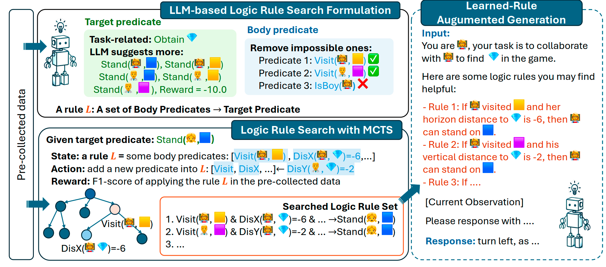
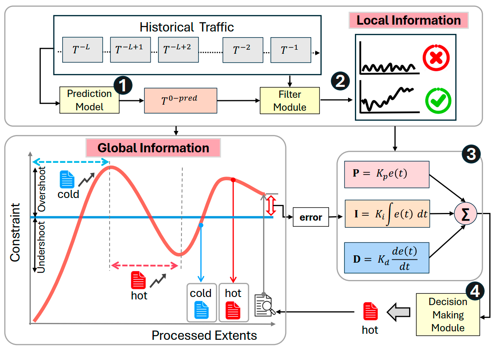
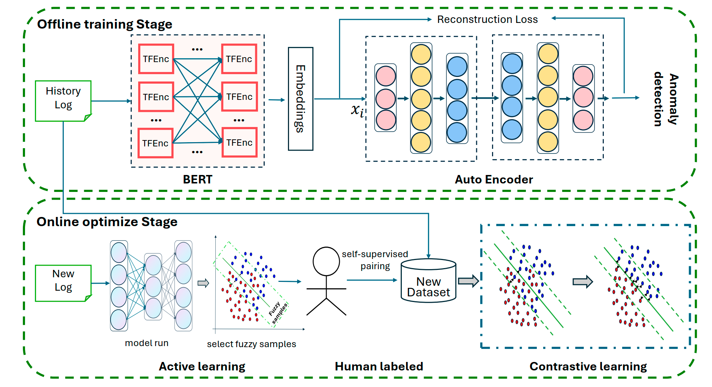
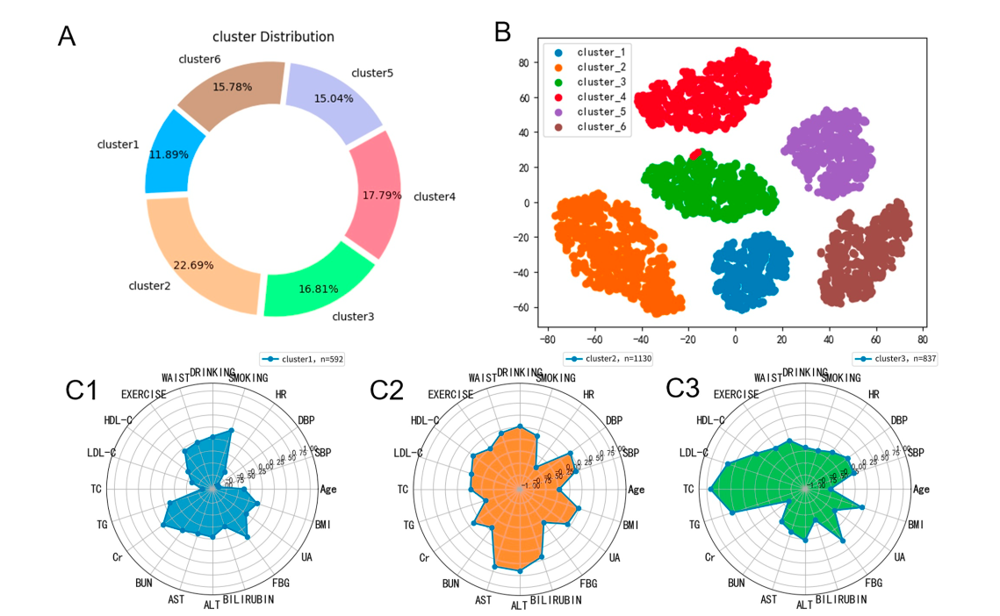
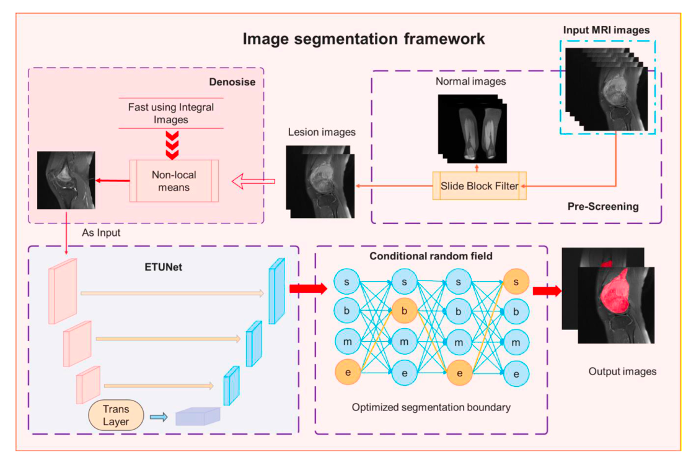

|
👋 Pei Xiao I am currently a graduate student at Peking University, the National Engineering Research Center for Software Engineering. I've also had great experiences working at ByteDance, Microsoft Research Asia (MSRA). My research interest is broadly in LLM Application and Reliable AI/Systems. I am dedicated to bridging the gap between AI and systems in the real world, and making AI and systems more reliable. 📧 Email / 📚 Google Scholar / 💻 Github / |
🔥 News
|
🏆 Key Honors and Awards
|
📝 Research🤝 I'm open to collaborations on related projects, feel free to contact me! 📧 Email: x1171296052 [at] gmail dot com * indicates equal contribution. |
📚 Publications |
 |
CoorLog: Efficient-Generalizable Log Anomaly Detection via Adaptive Coordinator in Software Evolution , Chiming Duan*, Minghua He*, Tong Jia, Yifan Wu, Jing Xu, Gege Gao, Lingzhe Zhang, Weijie Hong, Ying Li, Gang Huang Paper / Code
ASE 2025 (CCF-A)
IEEE/ACM International Conference on Automated Software Engineering
TL;DR: We propose CoorLog, a framework using an adaptive coordinator for efficient and generalizable log anomaly detection, especially in evolving software systems.
|
|  |
RuAG: Learned-Rule-Augmented Generation for Large Language Models Yudi Zhang*, , Lu Wang, Chaoyun Zhang, Meng Fang, Yali Du, Yevgeniy Puzyrev, Randolph Yao, Si Qin, Qingwei Lin, Mykola Pechenizkiy, Dongmei Zhang, Saravan Rajmohan, Qi Zhang Paper / Code
ICLR 2025
The Thirteenth International Conference on Learning Representations
TL;DR:We propose RuAG, a framework that enhances LLMs by automatically generating and injecting interpretable first-order logic rules.
|
|  |
Te-PID: Adaptive Erasure Coding for Temperature Management in Cloud Storage , Lu Wang, Fangkai Yang, Guoqing Geng, Haoran Li, Jeff Zhu, Yu Kang, Yifan Li, Terry Chen, Yue Chen, Saravan Rajmohan, Qi Zhang Paper / Code
FSE 2025(CCF-A)
ACM Joint European Software Engineering Conference and Symposium on the Foundations of Software Engineering
TL;DR: We propose Te-PID, an adaptive erasure coding temperature management system that optimizes cloud storage by predicting traffic patterns and dynamically adjusting data transitions.
|
 |
CLSLog: Collaborating large and Small Models for Log-based Anomaly Detection , Tong Jia, Chiming Duan, Minghua He, Weijie Hong, Xixuan Yang, Yihan Wu, Ying Li, Gang Huang Paper / Code
FSE-IVR 2025
ACM Joint European Software Engineering Conference and Symposium on the Foundations of Software Engineering
TL;DR: We propose CLSLog, a collaborative scheme combining LLM generalization and small model efficiency to effectively handle evolutionary logs in anomaly detection.
|
|  |
LogCAE: An Approach for Log-based Anomaly Detection with Active Learning and Contrastive Learning , Tong Jia, Chiming Duan, Huaqian Cai, Ying Li, Gang Huang Paper / Code
ISSRE 2024(CCF-B)
IEEE International Symposium on Software Reliability Engineering
TL;DR: We present LogCAE, a two-stage log-based anomaly detection approach that combines active learning and contrastive learning to improve the effectiveness of unsupervised models with minimal human label effort.
|
 |
LogAction: Consistent Cross-system Anomaly Detection through Logs via Active Domain Chiming Duan*,Minghua He*, , Tong Jia, Xin Zhang, Zhewei Zhong, Xiang Luo, Yan Niu, Lingzhe Zhang, Yifan Wu, Siyu Yu, Weijie Hong, Ying Li, Gang Huang Project / Paper / Code
ASE 2025(CCF-A)
IEEE/ACM International Conference on Automated Software Engineering
TL;DR: We propose LogAction, a framework that integrates transfer and active learning to achieve high-performance cross-system anomaly detection with minimal labeling effort.
|
 |
United We Stand: Towards End-to-End Log-based Fault Diagnosis via Interactive Multi-Task Learning Minghua He*, Chiming Duan*, , Tong Jia, Siyu Yu, Lingzhe Zhang, Weijie Hong, Jing Han, Yifan Wu, Ying Li, Gang Huang Paper / Code
ASE 2025(CCF-A)
IEEE/ACM International Conference on Automated Software Engineering
TL;DR: We propose Chimera, an end-to-end framework that unifies anomaly detection and root cause localization through interactive multi-task learning and bidirectional knowledge transfer.
|
|  |
Deep Contrast Clustering Analysis to Distinguish Diabetic Complications in Elderly Chinese Patients Weihao Wang*, Ran Wei*, , Xun Jiang, Zihao Chen, Jinghe Huang, Yanhua Ma, Danni Gao, Jian Shao, Jun Yu, Kaixin Zhou, Chen Chen, Ying Li, Ying Pan, Qi Pan, Tong Jia, Lixin Guo Project / Paper / Code
Diabetes Metabolism Research
Journal of Clinical Research and Quality in Diabetes
TL;DR: We propose a deep contrast clustering approach to predict diabetic complications in elderly Chinese patients, identifying six subgroups with distinct risks for cardiovascular, fatty liver, and stroke complications.
|
|  |
An Artificial Intelligence Multiprocessing Scheme for the Diagnosis of Osteosarcoma MRI Images Jia Wu, , Haojie Huang, Fangfang Gou, Zhixun Zhou, Zhehao Dai Project / Paper / Code
JBHI 2022(IF=7.21)
IEEE Journal of Biomedical and Health Informatics
TL;DR: We propose an AI-based preprocessing and segmentation method using ETUnet, enhancing osteosarcoma diagnosis by integrating preprocessing, noise reduction, and advanced segmentation techniques in MRI imaging.
|
 |
Walk the Talk: Is Your Log-based Software Reliability Maintenance System Really Reliable? Minghua He, Tong Jia, Chiming Duan, , Lingzhe Zhang, Kangjin Wang, Yifan Wu, Ying Li, Gang Huang Paper / Code
ASE-NIER 2025
IEEE/ACM International Conference on Automated Software Engineering
TL;DR: We introduce 'diagnostic faithfulness' as a key metric and propose FaithLog, a system that enhances model trustworthiness via a causality-guided attention mechanism.
|
 |
CSLParser: A Collaborative Framework Using Small and Large Language Models for Log Parsing Weijie Hong, Yifan Wu, Lingzhe Zhang, Chiming Duan, , Minghua He, Xixuan Yang, Ying Li Paper / Code
ISSRE 2025(CCF-B)
International Symposium on Software Reliability Engineering
TL;DR: CSLParser presents a collaborative framework where small and large language models work together for efficient log parsing.
|
📄 Preprints |
 |
A Survey on Parallel Text Generation: From Parallel Decoding to Diffusion Language Models Lingzhe Zhang*, Liancheng Fang*, Chiming Duan*, Minghua He*, Leyi Pan*, , Shiyu Huang, Yunpeng Zhai, Xuming Hu, Philip S. Yu, Aiwei Liu Paper / Code Preprints
TL;DR: A comprehensive survey of parallel text generation techniques, from parallel decoding to the latest diffusion language models.
|
|
Thank you for visiting! Feel free to contact me if you have any questions.
Last Update: 10, 2025 |